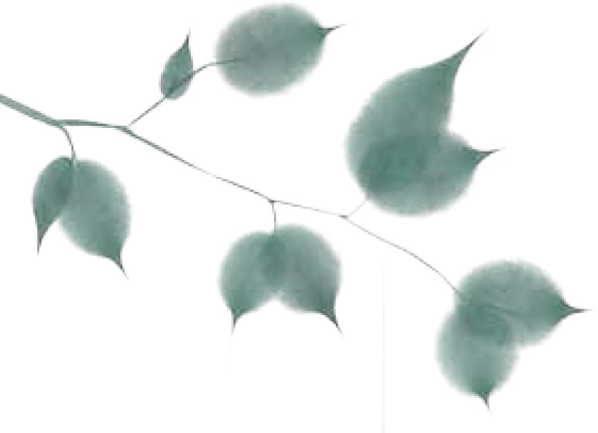
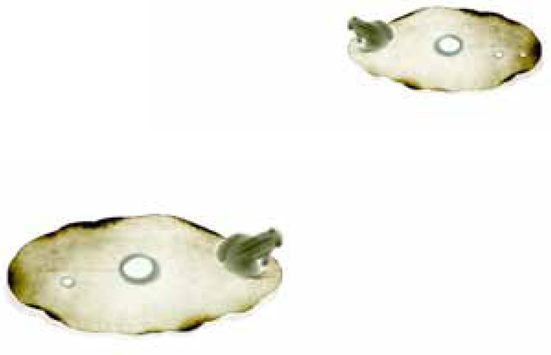
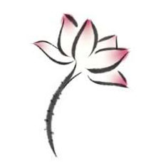
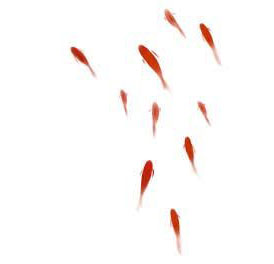

在弟弟乡下的花园，酢浆草花开得正盛。小小的紫花像泼墨，渲染在高大的红玫瑰丛下，有一点像紫色的流云。
我忍不住蹲下来欣赏，挺直而花瓣分明的玫瑰显得优雅而庄严，所以人们把它用来作为献给爱情的花。柔软而花姿抽象的酢浆草花是那么自在而随兴，所以它不是为奉献而存在，是给细腻的人印心的。
正在出神的时候，弟弟两个可爱的孩子跑来依偎我，问我说：“阿伯，你在找什么？”
我揽着两个孩子说：“阿伯正在寻找幸运草。”
“什么是幸运草呢？”
我拔起一株连根的酢浆草，教孩子仔细看，我说：“你们看，这酢浆草的叶子是三片的，传说如果找到一株四个叶片的酢浆草，叫作‘幸运草’，那时就会很幸运，愿望就会成真噢。”
“哇！太棒了，我们也要找幸运草。”
两个孩子很快地钻入花丛中，在玫瑰花与红合欢下搜寻。
孩子们热切的举动，使我莞尔。想到我第一次听到“幸运草”的传说，也是在八九岁的年纪。从那个时候起，我只要看到酢浆草，就会忍不住蹲下来，看看能不能找到幸运草，以使我的愿望实现。
一直到我长大了，还改不了寻找幸运草的习惯。有一天，我在一条河岸边找累了，躺在护岸上看着天空，才猛然想到：“我的愿望是什么呢？万一找到幸运草，我怎么样许愿呢？”
当时我是一个少年，愿望非常单纯，像童话一样。如果只能许三个愿望，第一个是成为好作家，写出生命中美好的情景；二是离开小小的故乡，去探访远大的世界；三是找到一位身心灵完全相契的伴侣，过着幸福快乐的日子。
可惜，我一直没有找到幸运草，因此愿望一直得不到许诺。虽然我也写作，企图去触及更美好的情景；我也离开了故乡，带着很深的思念；慢慢地，我也发现了，在广辽的人间，要找到身心灵完全相契的人，是多么渺茫，就好像在草原的酢浆草中找到一株幸运草。
在广辽的人间
要找到身心灵完全相契的人
是多么渺茫
|  |  |
我从来没有找到过幸运草，那株幸运草就更深地埋入了我的心里。
“阿伯！”两个满头大汗的孩子把我从冥想中叫唤出来，“整个花园，都找不到幸运草。”他们的脸上露出失望的表情。
“没关系的，阿伯从小到大都在找，也没有找到过幸运草呢！说不定有一天你们会找到。”我安慰孩子们，接着说，“阿伯给你们比幸运草更棒的东西。”
“是什么？”
我从口袋里掏出两个十元硬币，一人赏一个：“是不是比幸运草更棒？”孩子们开心地笑了，欢天喜地地走了。
这世间，真的有人找到过幸运草吗？到了中年我越来越生起疑情，但那疑情也日渐明晰了起来。
也许，“世上根本没有幸运草”——这是疑情的部分。
也许，“幸运草根本不在草里”——这是日渐明晰的部分。
幸运草多出来的一片，确实不在草里，而在我们的心中。只要我们的心够宽广坚持，只要我们的情够细腻温柔，只要我们的爱够深刻美好，只要我们一直保有喜悦自由的生命姿势，我们的心就会长出一株美丽的，四个叶片宛然的幸运草。
当我们的心比一般人多了一片，在平凡的酢浆草叶中，必然也会观见幸运草的实相。
相契的草一旦宛然，相契的人不也宛然了吗？
读到无际大师的“心药方”，说到不管是齐家、治国、学道、修身，必须先服十味妙药，才能成就。哪十味妙药呢？他说：
“好肚肠一条，慈悲心一片，温柔半两，道理三分，信行要紧，中直一块，孝顺十分，老实一个，阴骘全用，方便不拘多少。”这十味妙药要怎么吃呢？他又说：“此药用宽心锅内炒。不要焦，不要躁，去火性三分。于平等盆内研碎，三思为末，六波罗蜜为丸，如菩提子大。每日进三服，不拘时候，用和气汤送下。果能依此服之，无病不瘥。”
这无际大师的心药方真是令人莞尔，细细品味而受教无穷。无际大师是谁我并不知道，我也不想去知道，觉得知道了他的身份反而会拘限了他。猜想他是某朝代的高僧之一，深解所有的病都是从心而起，一日灵感大发，而写下了这帖药方。
“心药方”是用白话写成，不难理解其意，在此必须解释的是“六波罗蜜”，波罗蜜是行菩萨道之谓，行法有六种：一布施、二持戒、三忍辱、四精进、五禅定、六智慧。菩萨用这六种方法度人过生死海到涅槃彼岸。“菩提子”则是菩提树的种子，可做念珠，大小如莲子，做抽象解释时，“菩提”是“觉悟”的意思。
我想，不论是否佛教徒，每天能三服这帖心药，不仅能使身心安乐，也能无愧于天地；假如每天吃三四味，也就能去病延年；要是万万不可能，一天吃一口“温柔半两”，可能也足以消灾少祸了。
这一帖心药虽仅有十味，味味全是明心见性，充满了智慧。因为在佛家而言，人身体所有的病痛全是由心病而来。佛陀释迦牟尼将心病归属于贪嗔痴三种，只有在一个人除去贪、嗔、痴三病时，才能有一个明净的精神世界，也才会身心悦乐，没有挂碍，没有恐怖，远离颠倒梦想。因此所有佛书的入门就是一部心经，所有成佛的最高境界，靠的也是心。
佛经中对心的探求与沉思历历可见，释尊曾经这样开示：“心作天，心作人，心作鬼神，畜生地狱，皆心所为也。”（《般泥洹经》）又说：“能伏心为道者，其力最多。吾与心斗，其劫无数，今乃得佛，独步三界，皆心所为。”（《五苦章句经》）对于为善的人，心是甘露法；对于为恶的人，心是万毒根；因此医病当从内心医起，救人当从内心救起。
例如佛祖在《楞严经》里说：“灯能显色，如是见者，是眼非灯；眼能显色，如是见性，是心非眼。”翻成白话是：“灯能显出东西不是灯能看见东西，而是眼睛借灯看见了东西；眼睛看见了东西，并不是眼睛在看，而是心借眼睛显发了见性。”那么我们可以说一个人不明事理，不是事理有病，不是眼睛有病，而是内心有病，只要治好了真心，眼睛也可以分辨，事理也得到了澄清。
无际大师的心药即是从根本处解决了人生与人格的问题。
关于心的壮大，我国禅宗初祖达摩祖师在《达摩血脉论》中曾有一段精彩绝伦的文字。他说：“除此心外，见佛终不得也。佛是自心作得，因何离此心外觅佛？前佛后佛只言其心，心即是佛，佛即是心，心外无佛，佛外无心。若言心外有佛，佛在何处？心外既无佛，何起佛见？……若知自心是佛，不应心外觅佛。佛不度佛，将心觅佛不识佛。”
因而历来的禅宗无不追求一个本心，认为一个人不能修心、明心、真心、深心，而想成佛道，有如取砖头来磨镜，有如以沙石做饭，是杳不可得的。这正是六祖慧能说的：“于一切行住坐卧，常行一直心。”“但行直心，于一切法，勿有执着。”
知道了心对真实人生的重要，再回来看无际大师的心药方。他的这帖药是古今中外皆可行的，而且有许多正在现代社会中消失，实在值得三思。试想，一个人要是为人有好肚肠、长养慈悲心、多几分温柔、讲一些道理，对人守信用、对朋友讲义气、对父母孝顺、行住坐卧诚信不欺、不伤阴德、尽量给人方便，那么这个人算是道德完满的人，还会有什么病呢？
人人如此，社会也就无病了。
天下太平的线索，其实就是一个人内心完成所组合的元素！
偶尔在人行道上散步，忽然看到从街道延伸出去，在极远极远的地方，一轮夕阳正挂在街的尽头，这时我会想：如此美丽的夕阳实在是预示了一天即将落幕。
偶尔在某一条路上，见到木棉花叶落尽的枯枝，深褐色的，孤独地站在街边，有一种萧索的姿势，这时我会想：木棉又落了，人生看美丽木棉花的开放能有几回呢？
偶尔在路旁的咖啡座，看绿灯亮起，一位衣着素朴的老妇，牵着衣饰绚如春花的小孙女，匆匆地横过马路，这时我会想：那年老的老妇曾经也是花一般美丽的少女，而那少女则有一天会成为牵着孙女的老妇。
偶尔在路上的行人陆桥站住，俯视着在陆桥下川流不息、往四面八方奔驰的车流，却感觉到那样的奔驰仿佛是一个静止的画面，这时我会想：到底哪里是起点？而何处又是终站呢？
偶尔回到家里，打开水龙头要洗手，看到喷涌而出的清水，急促地流淌，突然使我站在那里，有了深深的颤动，这时我想着：水龙头流出来的好像不是水，而是时间、心情，或者是一种思绪。
唯其柔软
我们才能敏感
唯其柔软
我们才能包容
唯其柔软
我们才能精致
也唯其柔软
我们才能超拔自我
|  |  |
偶尔在乡间小道上，发现了一株被人遗忘的蝴蝶花，形状像极了凤凰花，却比凤凰花更典雅。我倾身闻着花香的时候，一朵蝴蝶花突然飘落下来，让我大吃一惊，这时我会想：这花是蝴蝶的幻影，或者蝴蝶是花的前身呢？
偶尔在静寂的夜里，听到邻人饲养的猫在屋顶上为情欲追逐，互相惨烈地嘶叫，让人的汗毛都为之竖立，这时我会想：动物的情欲是如此粗糙，但如果我们站在比较细腻的高点来回观人类，人不也是那样粗糙的动物吗？
偶尔在山中的小池塘里，见到一朵红色的睡莲，从泥沼的浅地中昂然抽出，开出了一句美丽的音符，仿佛无视于外围的污浊，这时我会想：呀！呀！究竟要怎么样的历练，我们才能像这一朵清净之莲呢？
偶尔……
偶尔我们也是和别人相同地生活着，可是我们让自己的心平静如无波之湖，我们就能以明朗清澈的心情来照见这个无边的复杂的世界，在一切的优美、败坏、清明、污浊之中都找到智慧。我们如果是有智慧的人，一切烦恼都会带来觉悟，而一切小事都能使我们感知它的意义与价值。
在人间寻求智慧也不是那样难的。最要紧的是，使我们自己的柔软的心，柔软到我们看到一朵花中的一片花瓣落下，都使我们动容颤抖，知悉它的意义。
唯其柔软，我们才能敏感；唯其柔软，我们才能包容；唯其柔软，我们才能精致；也唯其柔软，我们才能超拔自我，在受伤的时候甚至能包容我们的伤口。
柔软心是大悲心的芽苗，柔软心也是菩提心的种子，柔软心是我们在俗世中生活，还能时时感知自我清明的泉源。
那最美的花瓣是柔软的，那最绿的草原是柔软的，那最广大的海是柔软的，那无边的天空是柔软的，那在天空自在飞翔的云，最是柔软！
我们心的柔软，可以比花瓣更美，比草原更绿，比海洋更广，比天空更无边，比云还要自在，柔软是最有力量，也是最恒常的。
且让我们在尘世间，开出柔软清净的智慧之莲吧！
从前有一个国王，他的性子很急，对任何事情都不愿意等待。由于他位高权重，几乎所有的事情都能达成愿望。
有一天，王后生了一个女儿，整日整夜地啼哭，使国王感到心烦。他看着因哭泣而脸皱成一团的公主，心里想着：“如果我的公主能立刻长大就好了，我就可以看见她亭亭玉立的样子。”
虽然在理智上他知道没有人能立刻长大，但是在情感上却非常着急，一想到要看到美丽的女儿还要经过那么漫长的时间，他更是急得难以安寝。
国王心里想：“以我的权势和财富，加上国中人才济济，难道真的找不到使公主立刻长大的方法吗？如果连这样的方法都找不到，我做国王有什么意思？养一群大臣又有何用呢？”
他一想到，就立刻下令，召集所有的大臣到宫里来，当众宣布：“各位都是国中处理大事的智者，我很希望各位帮我想一个方法，让初生的公主立刻长大，不知道哪一位可以想出方法？”
大臣们面面相觑，不敢相信自己的耳朵，只好据实以告：“大王！我们虽然处理过许多国家大事，却从来没有听过能使婴儿立刻长大的方法呀！”
生命的一切成长
都需要时间
国王听了非常生气：“都是一群饭桶，以我们全国的力量，难道找不到一个使孩子立刻长大的方法吗？连这小小的方法都不知道，还能处理什么重大的国事呢？限你们今天晚上就给我想出一个让婴儿立刻长大的方法，否则不准走出皇宫一步。”
大臣们个个吓得面色如土、噤若寒蝉，一句话也不敢说。其中一位年长的大臣站出来说：“大王！在我国有一位最高明的医生，说不定他有立刻长大的灵药。”
国王立刻派人火速把名医请来，问名医：“你是我国医术最高明的医生，不知你有没有使公主立刻长大的灵药？”
“大王，这……”名医陷入了沉思。
国王着急地说：“只要你能使公主立刻长大，有任何困难，你尽管说！”
“大王！使公主立刻长大并没有什么困难。我知道在遥远的东方有这样的灵药，只要给公主服用，公主立刻就会长大。只是往返费时，要走很久的时间才会抵达。”名医平和地说。
国王一听，眼睛发亮，急切地问：“那么，要走多久的时间呢？”
名医说：“至少要十二年的时间，而且那种灵药要新鲜的时候吃才有效，所以我一定要带公主前往，摘下来立刻给公主服用，公主就会立刻长大了。”
国王欣喜若狂：“太好了！太好了！只要能让公主立刻长大，就算采灵药需要走十二年的时间也值得的。”
名医于是把公主带走了。
从此，国王每天都在担心，不知道十二年后公主有没有吃到遥远东方的那种灵药。有一天正在担心时，忽然听到禀报：公主和名医回来了。
当名医走进来的时候，身边跟着青春美丽、亭亭玉立的公主，国王看了欢喜不已：公主真的吃到立刻长大的灵药了。
他立刻召集群臣，公开宣布：“这果然是我国第一名医，既知道灵药在哪儿，又千里迢迢带公主去吃灵药，公主确实是立刻长大了。名医真是名不虚传！”
在我年少的时候，也曾经像国王一样，希望这个世界有一种万灵丹，让我们选择人生里自己喜欢的部分。
我曾经梦想，吃了一颗万灵丹，一睡醒来，已经度过了烦人的升学与考试，从最好的大学毕业。
也曾经梦想，不必经过长途的追寻、饱受情爱的挫折，吃了一颗万灵丹，张开眼睛，已经有了这个世界上最相知相契的伴侣。
更曾经梦想，远离一切成长的痛苦，远离一切努力的奋斗，远离一切悲伤的眼泪，当我服了那立刻完成的灵药，人生已经美满，从此过着幸福快乐的日子。
很可惜这个世界上没有这样的灵药，于是，在短暂的梦想之后，我依然坐在孤灯下读书写作。在情感的追寻中，我默默承受被抛弃与背叛的痛苦。在生命成长的过程里，我也常常流下悲伤的眼泪。
经过编织美梦的少年时代，我逐渐知悉了生命并没有结局，每一个结局只是一个新过程的开始罢了，美好的过程可能带来惨痛的结局，痛苦的过程也可能带来幸福的结局。当然，过程平顺而结局圆满，是最理想的，但一时圆满不代表永远美满，只是走向一个新的起点。
我们的人生不是问答题，有时问不在答里，有时答不在问里；有的问题没有答案，有的答案远在问题之外。
我们的情感不是是非题，没有绝对的是非，因为每一个情感都是不相同、不能类比的；每一段情感都是对错交缠的，在失败的情感中，没有赢家。
可叹的是，这些对过程更深刻的认识，对人生更深密的思维，都是到饱经挫折的中年才慢慢理清的。
在我生命最困苦的时刻，也曾寻找过万灵丹，向天求告：“请给我一帖灵药吧！”我曾乞灵于宗教，探寻生命的终极安顿之方；也曾炼丹于文艺，追求情爱的平息烦恼之法。
经过了差不多十年，我才发现“灵药并不在远方”，也就是正视每一个眼前的生活历程，努力地活在当下，对这一阶段的人生与情感用心珍惜。
由于对眼前、对当下的珍惜用心，才能不怨恨过去，不怀忧未来。才能在每一个过程当中努力承担，以最大的心意来生活。
在人生的历程，我不着急，我不急着看见每一回的结局，我只要在每一个过程，慢慢慢慢地长大。
在被造谣时，我不着急，因为我有自知之明。
在被误解时，我不着急，因为我有自觉之道。
在被毁谤时，我不着急，因为我有自爱之方。
在被打击时，我不着急，因为我有自愉之法。
那是因为我深深地相信：生命的一切成长，都需要时间。
一直到现在，我每次看到在街边喝汽水的孩童，总会多注视一眼。而每次走进超级市场，看到满墙满架的汽水、可乐、果汁饮料，心里则颇有感慨。
看到这些，总令我想起童年时代想要喝汽水而不可得的景况。在台湾初光复不久的那几年，乡间的农民虽不致饥寒交迫，但是想要三餐都吃饱似乎也不太可得，尤其是人口众多的家族，更不要说有什么零嘴、饮料了。
我小时候对汽水有一种特别奇妙的向往，原因不在汽水有什么好喝，而是由于喝不到汽水。我们家是有几十口人的大家族，小孩依大小排行就有十八个之多。记忆里东西仿佛永远不够吃，更别说是喝汽水了。
喝汽水的时机有三种：一种是喜庆宴会，一种是过年的年夜饭，一种是庙会节庆。即使有汽水，也总是不够喝，到要喝汽水时好像进行一个隆重的仪式，十八个杯子在桌上排成一列，依序各倒半杯，几乎喝一口就光了，然后大家舔舔嘴唇，觉得汽水的滋味真是鲜美。
有一回，我走在街上的时候，看到一个孩子喝饱了汽水，站在屋檐下呕气，呕——长长的一声。我站在旁边简直看呆了，羡慕得要死掉，忍不住忧伤地自问道：什么时候我才能喝汽水喝到饱？什么时候才能喝汽水喝到呕气？因为到读小学的时候，我还没有尝过喝汽水喝到呕气的滋味，心想，能喝汽水喝到把气呕出来，不知道是何等幸福的事。
当时家里还点油灯，灯油就是煤油，俗称“臭油”或“番仔油”。有一次我的母亲把臭油装在空的汽水瓶里，放置在桌脚旁，我趁大人不注意，一个箭步就把汽水瓶拿起来往嘴里灌，当场两眼翻白，口吐白沫，经过医生的急救才活转过来。为了喝汽水而差一点丧命，后来成为家里的笑谈，却并没有阻绝我对汽水的向往。
在小学三年级的时候，有一位堂兄快结婚了，我在他结婚的前一晚竟辗转反侧地失眠了。我躺在床上暗暗地发愿：明天一定要喝汽水喝到饱，至少喝到呕气。
第二天我一直在庭院前窥探，看汽水送来了没有。到上午九点多，看到杂货店的人送来几大箱的汽水，堆叠在一处。我飞也似的跑过去，提了两大瓶黑松汽水，就往茅房跑去。彼时农村的厕所都盖在远离住屋的几十米之外，有一个大粪坑，几星期才清理一次。我们小孩子平时很恨进茅房的，卫生问题通常是就地解决，因为里面实在太臭了。但是那一天我早计划好要在里面喝汽水，那是家里唯一隐秘的地方。
我把茅房的门反锁，接着打开两瓶汽水，然后以一种虔诚的心情，把汽水咕嘟咕嘟地往嘴里灌，就像灌蟋蟀一样，一瓶汽水一会儿就喝光了。几乎一刻也不停地，我把第二瓶汽水也灌进腹中。
我的肚子整个胀起来。我安静地坐在茅房地板上，等待着呕气。慢慢地，肚子有了动静，一股沛然莫之能御的气翻涌出来，呕——汽水的气从口鼻冒了出来，冒得我满眼都是泪水。我长长地叹了一口气：“这个世界上再也没有比喝汽水喝到呕气更幸福的事了吧！”然后朝圣一般打开茅房的木闩，走出来，发现阳光是那么温暖明亮，好像从天上回到了人间。
我们走过的每一步
不一定是完美的
但每一步都有值得
深思的意义
在茅房喝汽水的时候，我忘记了茅房的臭味，忘记了人间的烦恼，觉得自己是世上最幸福的人。一直到今天我还记得那年叹息的情景。当我重复地说：“这个世界上再也没有比喝汽水喝到呕气更幸福的事了吧！”心里百感交集，眼泪忍不住就要落下来。
贫困的岁月里，人也能感受到某些深刻的幸福，像我常记得添一碗热腾腾的白饭，浇一匙猪油、一匙酱油，坐在“户定（厅门的石阶）”前细细品味猪油拌饭的芳香，那每一粒米都充满了幸福的香气。
有时这种幸福不是来自食物。我记得当时在我们镇上住了一位卖酱菜的老人，他每天下午都会推着酱菜摊子在村落间穿梭。他沿路都摇着一串清脆的铃铛，在很远的地方就可以听见他的铃声。每次他走到我们家的时候，都在夕阳落下之际。我一听见他的铃声跑出来，就看见他浑身都浴在黄昏柔美的霞光中。那个画面、那串铃声，使我感到一种难言的幸福，好像把人心灵深处的美感全唤醒了。
有时幸福来自于自由自在地在田园中徜徉了一个下午。
有时幸福来自于看到萝卜田里留下来作种的萝卜，开出一片宝蓝色的花。
有时幸福来自于家里的大狗突然生出一窝颜色都不一样的、毛茸茸的小狗。
生命的幸福原来不在于人的环境、人的地位、人所能享受的物质，而在于人的心灵如何与生活对应。因此，幸福不是由外在事物决定的。贫困者有贫困者的幸福，富有者有其幸福，位尊权贵者有其幸福，身份卑微者也有其幸福。在生命里，人人都是有笑有泪；在生活中，人人都有幸福与忧恼，这是人间世界真实的相貌。
从前，我在乡间城市穿梭做报道访问的时候，常能深刻地感受到这一点。坐在夜市喝甩头仔米酒配猪头肉的人民，他感受到的幸福往往不逊于坐在大饭店里喝XO的富豪。蹲在寺庙门口喝一斤二十元粗茶的农夫，他得到的快乐也不逊于喝冠军茶的人。围在甘蔗园吆五喝六，输赢只有几百元的百姓，他得到的刺激绝对不输于在梭哈台上输赢几百万的豪华赌徒。
这个世界原来就是相对的，而不是绝对的，因此幸福也是相对的，不是绝对的。
由于世界是相对的，使得到处都充满缺憾，充满了无奈与无言的时刻。但也由于相对的世界，使得我们不论处在任何景况，都还有幸福的可能，能在绝壁之处也见到缝隙中的阳光。
我们幸福的感受不全然是世界所给予的，而是来自我们对外在或内在的价值判断。我们幸福与否，正是由自我的价值观来决定的。
如果，我们没有预设的价值观呢？如果，我们可以随环境调整自己的价值判断呢？
就像一个不知道金钱、物质为何物的赤子，他得到一千元的玩具与十元的玩具，都能感受到一样的幸福。这是他没有预设的价值观，能以直观来面对世界，世界也因此以幸福来面对他。
就像我们收到陌生者送的贵重礼物，给我们的幸福感还不如知心朋友寄来的一张卡片。这是我们随环境来调整自己的判断，能透视物质包装内的心灵世界，幸福也因此来面对我们的心灵。
所以，幸福的开关有两个：一个是直观，一个是心灵的品味。
这两者不是来自远方，而是由生活的体会得到的。
什么是直观呢？
有源律师问大珠慧海禅师：“和尚修道，还用功否？”
大珠：“用功。”
“如何用功？”
“饿来吃饭，困来眠。”
“一切人总如同师用功否？”
“不同！”
“何故不同？”
“他吃饭时不肯吃饭，百种需索；睡时不肯睡，千般计较，所以不同也。”
好好地吃饭，好好地睡觉就是最大的幸福，最深远的修行，这是多么伟大的直观！在禅师的语录里有许多这样的直观，都是在教导启示我们找到幸福的开关，例如：
百丈怀海说：“如今对五欲八风，情无取舍，垢净俱亡，如日月在空，不缘而照；心如木石，亦如香象截流而过，更无滞碍，此人天堂地狱所不能掇也。”
庞蕴居士说：“神通并妙用，运水与搬柴。”“好雪片片，不落别处。”
沩山灵祐说：“一切时中，视听寻常，更无委曲，亦不闭眼塞耳，但情不附物，即得。……譬如秋水澄清，清净无为，澹泞无碍，唤他做道人，亦名无事之人。”
黄檗希运：“凡人多不肯空心，恐落空。不知自心本空，愚人除事不除心，智者除心不除事。”“终日吃饭，未曾咬着一粒米；终日行，未曾踏着一片地。与么时，无人我等相，终日不离一切事，不被诸境惑，方名自在人。”
在禅师的话语中，我们处处都看见了一个人如何透过直观，找到自心的安顿、超越的幸福。若要我说世间的修行人所为何事？我可以如是回答：“是在开发人生最究竟的幸福。”这一点禅宗四祖道信早就说过了。他说：“快乐无忧，故名为佛！”读到这么简单的句子使人心弦震荡，久久还绕梁不止。这不是人间最大的幸福吗？
只是在生命的起落之间，要人永远保有“快乐无忧”的心境是何其不易，那是远远超过了凡尘的青山与溪河的胸怀。因此另一个开关就显得更平易了，就是心灵的品味，仔细地体会生活环节的真义。
现代诗人周梦蝶，他吃饭很慢很慢，有时吃一顿饭要两个多小时。有一次我问他：“你吃饭为什么那么慢呢？”
他说：“如果我不这样吃，怎么知道这一粒米与下一粒米的滋味有什么不同。”
我从前不知道他何以能写出那样清新空灵、细致无比的诗歌，听到这个回答时，我完全懂了，那是来自心灵细腻的品味，有如百千明镜鉴像，光影相照，使我们看见了幸福原是生活中的花草，粗心的人践花而过，细心的人怜香惜玉罢了。
这正是黄龙慧南说的：“高高山上云，自卷自舒，何亲何疏；深深涧底水，遇曲遇直，无彼无此。众生日用如云水，云水如然人不尔。若得尔，三界轮回何处起？”
也是克勤圆悟说的：“三百六十骨节，一一现无边妙身；八万四千毛端，头头彰宝王刹海。不是神通妙用，亦非法尔如然，苟能千眼顿开，直是十方坐断！”
众生在生活里的事物就像云水一样。云水如此，只是人不能自卷自舒、遇曲遇直，都保持幸福之状。保有幸福不是什么神通，只看人能不能千眼顿开，有一个截然的面对。
“垂丝千尺，意在深潭。”我们若想得到心灵真实的皈依处，使幸福有如电灯开关，随时打开，就非时时把品味的丝线放到千尺以上不可。
人间的困厄横逆固然可畏，但人在横逆困厄之际，没有自处之道，不能找到幸福的开关才是最可怕的。因为这世界的困境牢笼不光为我一个人打造，人人皆然。为什么有的人幸福，有的人不幸，实在值得深思。
我有一位朋友，是一家大公司的经理。有一天，我约他去吃番薯稀饭，他断然拒绝了。
他说：“我从小就是吃番薯稀饭长大的。十八岁那一年我坐火车离开彰化家乡，在北上的火车上就对天发誓：这一辈子我宁可饿死，也不会再吃番薯稀饭了。”
我听了怔在当地。就这样，他二十年没有吃过一口番薯，也许是这样决绝的志气与誓愿，使他步步高升，成为许多人欣羡的成功者。不过，他的回答真是令我惊心，因为在贫困岁月抚养我们成长的番薯是无罪的呀！
当天夜里，我独自去吃番薯稀饭，觉得这被视为卑贱象征的地瓜，仍然滋味无穷。我也是吃番薯稀饭长大的，但不管何时何地吃它，总觉得很好，充满了感恩与幸福。
走出小店，仰望夜空的明星，我听到自己步行在暗巷中清晰而渺远的足音，仿佛是自己走在空谷之中。我知道，我们走过的每一步不一定是完美的，但每一步都有值得深思的意义。
只是，空谷足音，谁愿意驻足聆听呢？
有个流浪者来到一座城市，遇到了守城的人，流浪者告诉守城的人，他离开了家乡，想搬到这座城市来。
“这是个怎样的城市呢？”流浪者问。
“你的家乡是一个怎样的城市呢？”守城的人反问他。
“那是个糟透了的烂地方，政府腐败，人民互相仇视，很多人失业。”流浪者愤愤地说。
“你会发现这个城市和你的家乡没有两样。”守城的人说。
流浪者听了，掉头而去。
过了些时候，又有一个人提着箱子要进城。
“这是个怎样的城市呢？”那人问道。
“你来自怎样的城市呢？”守城的人反问他。
“哦！那是个可爱的地方。”打算进城的人说，“政府勤政爱民，百姓温和友善，只可惜因为工作的关系，我必须搬到这儿来。”
“你会发现这个城市也一样。”守城的人答道。
那人于是高高兴兴地进城去了。
一旦快乐的思想
被建立起来
即使生活悠闲单纯
幸福乃至人间的美善
都会自然地来到
我坐在溪边读这个故事，忍不住笑了，正像这个故事一样，我们的思想正是决定我们一生的最重要关键。当我抬起头来，看到清澈的溪流潺潺流过，溪两岸的树木青翠碧绿，感觉到台湾乡间的景致多么宜人，我多么感恩能生长在这样润泽秀丽的地方。
这次回乡度暑假，随手带了几本在书架放了很久、没有时间看的书回来，一本是露易丝·海的《生命的重建》，一本是《如莲的喜悦》，一本是艾伦·科恩的《智慧的河流》。
每天，或者是带孩子到鼓山顶上游戏，或者到美浓的双溪玩水，我就随身带这几本书到山上和溪边去阅读，那种心情非常愉悦而优美，读这几本书却仿佛与老友重逢，好像随着一些简单有效的叙述，重新印证了自己长久以来的思维。
这三本书共同指涉的一种思维就是要有“快乐的思想”，快乐的思想乃是建立幸福人生的第一步，一个人没有快乐的思想，那么尽管用尽一切努力，可能还是会落败落空。一旦快乐的思想被建立起来，即使生活悠闲单纯，幸福乃至人间的美善都会自然地来到。
正如在书里的一个故事：
一个人走向三个砌砖的工人，问他们在做什么。第一个人回答道：“我在砌砖。”
第二个工人回答道：“我在砌一面墙。”
第三个工人带着安详与喜悦说道：“我在盖一座教堂。”
有了快乐的思想，同样是在人生里砌砖，心里会多了一份喜悦、安详、庄严。
为快乐的思想砌砖，第一步是要喜爱自己，“要对自己有极大的尊重心”，以及“对自己的生命、心意、身体，有深深的感激之意”。因为“人在自暴自弃的时候，聪明的会变蠢，健康的会多病，福不至，心不灵”。快乐的思想是生命的润滑油，可以使生命运行无碍，失去快乐的思想则会百病丛生，这些，最基本的是喜爱自己。
其次，要去除“憎恨”“批评”“内疚”“恐惧”四种坏习惯，也就是革除生命的负面情绪，重新学习爱与宽容。负面的情绪就有如鞭子，每想到一次就像被鞭打，那些负心背叛我们的人，曾经无情地鞭笞我们的心灵，但是他们早就过去了、离开了，我们的负面情绪则捡起他们遗留的鞭子，自己鞭打自己。因此，我们要来砌“宽容”的砖。
第三步要专注，也就是活在当下，旧的、过去的，已经影响过我们的生命，我们可以使它不再发生作用，我们可以善用当下，创造出一个崭新的生命，就像许多事物的追寻一样，精神意识的追寻必须从现在开始，我们往往因为想在“适当”的时间与“适当”的地点开始，而从未开始过。
第四步要放松，彻底的放松是使身心健康最重要的方法，“要知道所有真正属于自己的东西，并不会被他人夺去，实在大可放心”。“从宇宙观点来说，人生就是一场游戏，大地就是游戏场，每一生即是一场游戏，而目标就是觉醒与了悟，或任何我们认定的人生目标。”因为放松，我们就能放下，也能以游戏一样坦然的心来看人生。
露易丝·海是美国极著名的心理治疗师，她从来不用药物，治疗过千千万万的病人，甚至治疗了许多癌症病患，她自己在中年时罹患癌症，也是靠快乐的思想治疗的，最后我们引用几段她的话做结尾：
“如果我们自己坚持相信下雨天是坏的一天，那么，每当下雨的时候，我们的心都会因此沉下来，人变得很不开朗。我们会抗拒这下雨的一天，而不懂得顺应此时此刻。
“事实上，天气并没有‘好’与‘坏’之分，天气就是天气，但若是我们把下雨天看成是‘坏’，影响了情绪，下雨天便真的是‘坏’了。
“一个人要得到一个快乐的生命，就先要有快乐的思想；要有一个旺盛的生命，就先要有旺盛的思想；要有一个充满慈爱的生命，就先要有充满慈爱的思想。”
当今之世，
人要活下去，
也是不容易的。
能有点文学艺术修养，
才能活得从容些。
——台静农
在国父纪念馆，每逢假日，总有许多青少年溜直排滑轮，还有一些教练免费指导。
我喜欢看人溜直排滑轮，因为它充满了力、美与速度，如果再年轻几岁，我也想来学溜滑轮。
散步的时候，只要路过国父纪念馆，都会转进去看人溜滑轮，我最喜欢在入口的地方，看教练教导初学滑轮的人。
教练的开场白经常是：“溜滑轮最重要的是要先学会跌倒，如果我们懂得跌倒而不受伤，就不会害怕跌倒，学会溜滑轮就很快了。溜滑轮和骑自行车一样，一定会跌倒，不跌倒是不可能学会的。”
教练开始示范，高速跌倒时要如何翻滚，撞到东西时要如何闪避，失去平衡时要先保护重要部位……
看着教练在那里不断地跌倒，我忍不住想：“跌倒的学问可真大呀！”
接着，换学员练习跌倒，他们一个个穿戴整齐，有多种安全保护，头盔、护膝、护腕等等，很像外星来的兵团在练习作战。
“一、二、三，扑倒！”
“一、二、三，前滚翻！”
“一、二、三，侧滚翻！”
“一、二、三，相撞！”
听着教练的指挥，学员不断地练习，看来非常有趣。学跌倒学得差不多了，教练问：“还怕跌倒的，请举手！”
没有人举手。
“现在，可以自由带开，去溜滑轮了。”教练宣布。
一群人于是往空旷的广场溜去，仿佛射出去的箭。
每次，看人学跌倒，总使我深有感触，想到在实际的人生中，从来没有人教我们怎么去跌倒，也从未有人在一开始就告诉我们：“你的感情会跌倒！你的学业会跌倒！你的事业会跌倒！你的人际关系会跌倒！因为人生和溜滑轮一样，一定会跌倒，不跌倒就不叫作人生！”
由于没有学过跌倒，在每一次跌倒时总是伤得很重，甚至个性比较刚烈的、比较要求完美的人，一跌倒就完、绝望了、万念俱灰了。
当我们看到有些人为了极轻微的跌倒，就自伤、自残、自戕、自杀，做出比实际跌倒更严重百倍的自我凌虐时，内心总有深深的同情，在同情的时候又忍不住会问：为什么没有人教我们跌倒，为什么我们在成长的过程中没有学过跌倒？
我们总是告诉孩子：“不要深陷感情的泥沼！”
却很少告诉孩子：“在感情受伤时，正是显现风格的最好时机，要尊重别人的选择，要善待自己。”
我们总是说：“要尽一切可能地追求成功！”
却很少说：“在追求成功的路途上，要给自己留空间，给别人留余地！”
我们总是说：“往前冲，什么都不用怕！”
却很少在往前冲时戴头盔、护膝、护腕，做好保护措施，并预先演练跌倒。
人生里的跌倒与失败，几乎是必然的，跌倒的价值是使人坚强，失败的意义则是让我们更珍惜人生。一个人如果学会跌倒，学会认识失败，等于是学会人生的一半了。
不怕跌倒，不畏失败，就能生起一些从容。
从容，是老天送给内心有空间的人最好的礼物。
当我沿街散步，看到美丽的街景，总会停步；看到动人的情境，也会驻足；随情随性地穿街过巷，然后回头看到人潮与车流，向不可知的地方奔赴，我总庆幸自己是个作家，有一些内在空间，有一些从容。
对我来说，写作就是希望的请帖，我只要每天拿这张请帖，就能立即抵达繁花似锦的彼岸。
对我来说，写作就是美好的安慰，我只要每天有新的思维，就能很快发现失败和跌跤的意义。
我不是那么烦恼，也不是那么在意！
我不会那么执着，也不会那么僵化！
我不想那么缓慢，也不想那么着急！
我不爱那么虚无，也不爱那么现实！
我已穿了文学的轮滑鞋，也跌倒过数回，我还会自由地去溜滑轮，比起昔年，我已学会了从容。
已看惯了太阳的东升西落，月亮的阴晴圆缺，习惯了春夏秋冬的冷暖，世间万物的改变，却很难看淡人间的悲欢离合、情仇恩怨，更难将伤心难过看得风轻云淡。经过了很多年的改变以后，将开心当成了一种习惯，于是我发现我的开心感染了很多人，人们问我为什么的时候，我只说：开心是一种习惯！
以前常常讨厌世人那些所谓的好心忠告，因为明明知道没有几个人能做得到，事事去斤斤计较，到头来伤心难过的只是自己。常常听不习惯朋友的花言巧语，看不习惯朋友的惺惺假意，突然恨透了这个世界，感觉到处都是虚伪的面孔。
也许是因为经历得太多，也许是因为个人没有办法改变这个社会的情况下只能顺应这个社会，于是喜欢上西门子公司的一句企业文化：“请愉快地工作。”并改成了：“请开心地生活”。的确，开心与不开心，都要过一天二十四个小时，何不开心地度过每一天呢？
当然，没有哪个人在面对伤心和难过的时候还可以傻笑，但是，你却可以在最短的时间内去调整自己的心态。要知道伤心不是解决问题的最好办法，于是，我将那句话刻在了心里：“请开心地生活。”这样时时刻刻提醒自己，我应该开心地过每一天，因为我像所有人一样，希望自己能过得好一点，虽然不能从物质上满足自己，但是已学会弥补自己心灵上的空虚。
人的一生，总有学不完的知识，总有领悟不透的真理，总有一些有意或者无意的烦心事闯到心里来。总之，人生之梦，顺少逆多，一辈子不容易，千万不要总是跟别人过不去，更不要跟自己过不去。书上云：看别人不顺眼是自己的修养不够。想一下也是，因为每个人的出身背景、受教育程度、受社会影响都是不一样的，在你看不惯别人的同时，是否别人也看不惯你呢？所以开心地去面对每一个人，要学会看朋友身上的优点，学习朋友身上的优点，朋友的缺点正是你最好的反面教材，如果你也有这样的缺点请及时改善，不正是你所期望的吗？
开心不仅仅是心里的感觉，而是因为你有了开心的感觉，于是别人可以从你的脸上读到微笑，读到开心。如果你在生活中比较细心的话，你就会知道世间最美丽的表情就是微笑，如果你想天天拥有世间最美丽的表情，那么请把开心当成一种习惯吧！
心随境转是凡夫，境随心转是圣贤。
用惭愧心看自己，用感恩心看世界。
世间最美丽的表情
就是微笑
如果你想天天拥有
世间最美丽的表情
那么请把开心
当成一种习惯吧